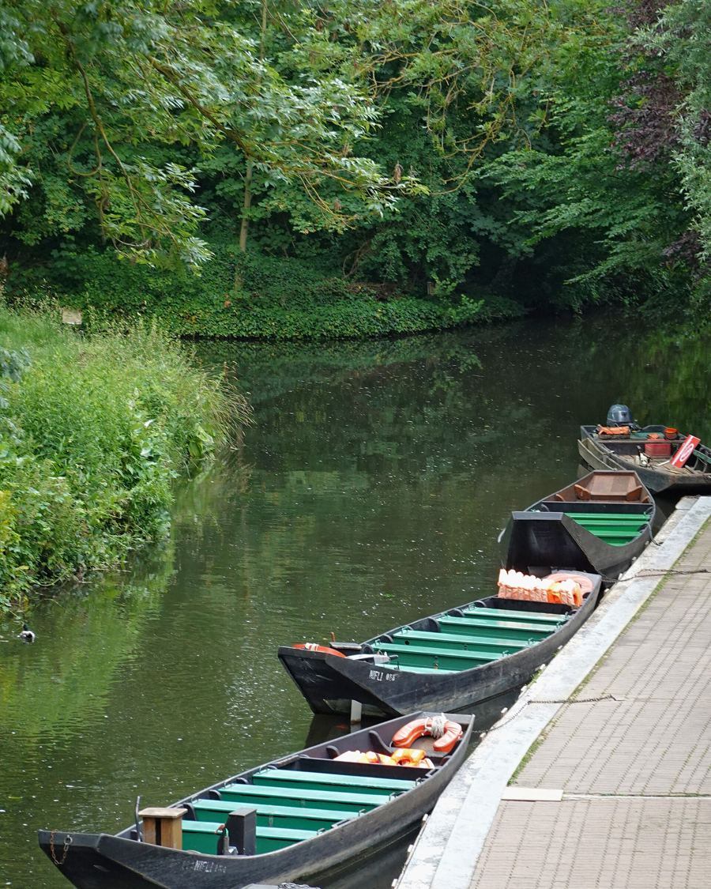
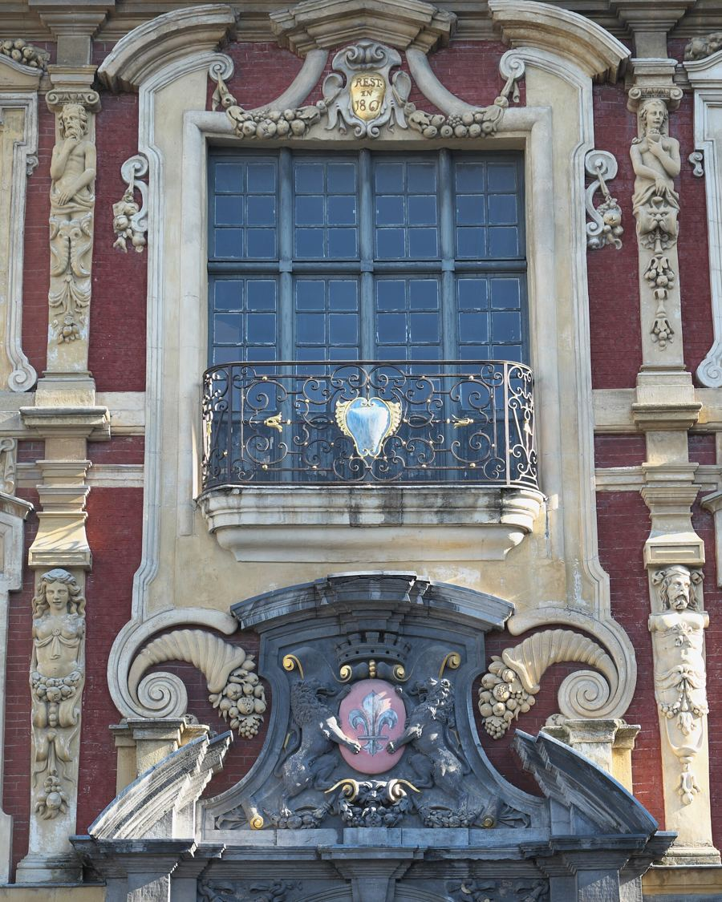
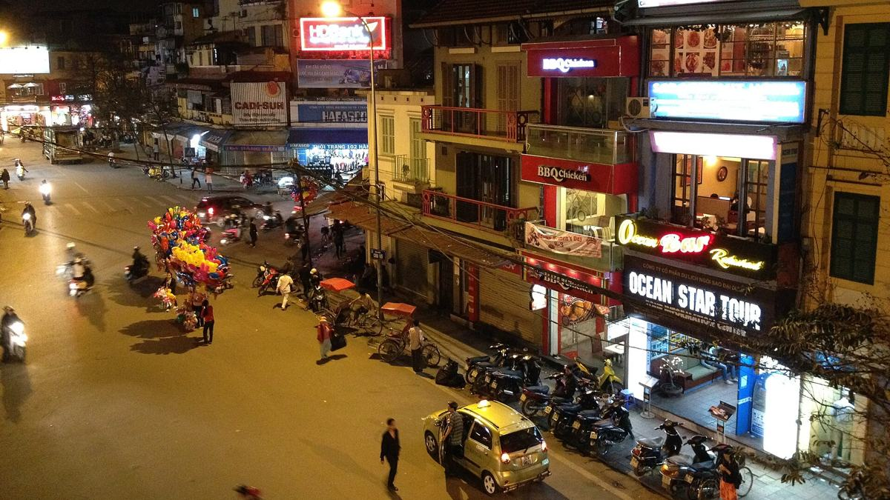

Igor Belyaev
Portfolio
2026
Étudiant en informatique,
en route vers le cloud & le DevOps
Hanoï —
Défiler ↓
(01) À propos
Je m'intéresse à ce qui se passe une fois le code écrit : le déployer, le surveiller, le faire tenir quand le trafic augmente.
Je suis en troisième année de licence d'informatique, en double diplôme entre l'Université de Lille et l'USTH, à Hanoï.
C'est en cours de réseaux que j'ai compris que l'infrastructure m'attirait plus que l'application elle-même. Je vise un master orienté cloud et DevOps.
(02) Parcours
-
2020 — 2023
Berck
Baccalauréat généralLycée Jan Lavezzari

-
2023 — 2024
Amiens
Classe préparatoire MP2ILycée Louis Thuillier

-
2024 — 2026
Lille
Licence 1 Informatique – Mathématiques, puis Licence 2 InformatiqueUniversité de Lille

-
2026 — 2027 · maintenant
Hanoï
Licence 3 Informatique, double diplômeUniversité de Lille × USTH

- 2027 — la suite Un master orienté cloud et DevOpsCandidatures en préparation
(03) Compétences
Je pratique
- Java
- SQL
- Linux
- Git
J'apprends
- Docker
- nginx
- GitHub Actions
Langues
- Russe langue maternelle
- Français C1
- Anglais B2
(04) Photos
En dehors de l'écran, je fais de la photo. Ces images sont provisoires, les miennes arrivent.

01 La ligne 2A, la nuit — NKSTTSSHNVN 02 Hoàn Kiếm — cloud.shepherd 
03 Vieux quartier — Adam Jones 
04 Train Street, le jour — Radek Kucharski 
05 Train Street, le soir — Rod Waddington 
06 Carrefour — David McKelvey 
07 Au bord du lac — cloud.shepherd 
08 Lumières — cloud.shepherd
(05) Ce site
À chaque git push, ce site se reconstruit, se teste et se publie tout seul.
- 01Push
- 02Build
- 03Test
- 04Publish
Écrit à la main, sans framework. GitHub Actions valide le HTML, construit une image Docker (nginx sans les droits root, conteneur en lecture seule), la teste, la publie sur ghcr.io, puis met la page en ligne sur GitHub Pages.
Chaque image porte le hash de son commit. Version affichée :
copie locale.
Voir le code sur GitHub
(06) Contact
Une question, un stage, un projet ? Écrivez-moi.